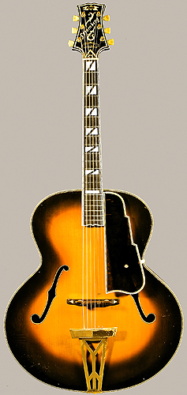

Stromberg's top models, with their colossal, nineteen-inch-wide bodies, provided the tremendous volume and projection needed for a rhythm guitarist to be heard in the large jazz orchestras of the 1940s. Charles and Elmer, father and son, worked together in Boston, beginning in the early 1930s. Though they competed for business with John D'Angelico in New York, their total output was only 636 instruments, a little more than half the number made by D'Angelico.
NMM 10863 reflects Stromberg's post-1940 style, with a single diagonal top brace and carved, rather than pressed, arching. The Master 400 was their top grade instrument, with a decoratively engraved and painted headstock veneer and maximum body size. Both Charles and Elmer died in 1955, as musical tastes were changing; rock and roll and country had begun to overshadow big band jazz as America's most popular musical styles.
Soundboard: arched, two-piece, quarter-cut spruce: wide grain. Back: two-piece maple cut off-the-quarter: medium, horizontal curl; wide grain. Ribs: two-piece, slab-cut maple with faint blister figure. Head: maple with black celluloid over white celluloid veneer; model and signature engraved in headstock and painted ivory and gold. Neck: two-piece maple; integral with head; maple of inlay along center line with brown-stained maple strips on each side.
Binding: white celluloid; trim comprised of five-ply (black-white-black-white-black) celluloid purfling strips on top and two-ply (black-white) celluloid purfling strips on back and ribs. Soundholes: f-holes bound in two-ply black and white celluloid purfling strip trim.
Heel cap: five-ply thin black-white-black-white-black celluloid layers. Fingerboard: ebony bound in ivoroid with five-ply (black-white-black-white-black) celluloid purfling strip trim on top sides, two-ply black-white celluloid purfling strip on lower end and sides; end terminating in a point, with rounded edges on the sides; 20 nickel-silver frets; mother-of-pearl block behind 15th fret; split mother-of-pearl blocks behind 1st, 5th, 7th, 9th, and 12th frets; black celluloid side dots behind 3rd, 5th, 7th, 9th, 12th, and 15th frets.
Bridge: two-piece rosewood (compensated) with brass screws for height adjustment; triangular mother-of-pearl inlays on each bridge foot. Tuners: six Kluson gold-plated brass worm-gear machine tuners with tulip-shaped, yellow, marbleized celluloid heads.
Endpin: white celluloid. Pick guard: translucent imitation tortoise-shell celluloid bound in white celluloid with five-ply (black-white-black-white-black) celluloid purfling strip trim with stair-step outline on treble side, mounted on guitar with gold-plated brass bracket and three gold-plated steel screws; bracket possibly later. Lacquer: dark red-brown sunburst.